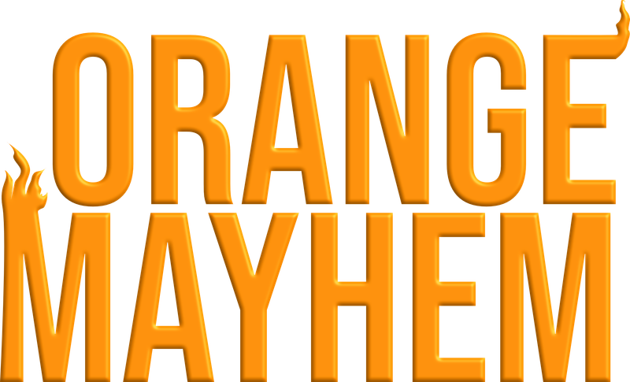
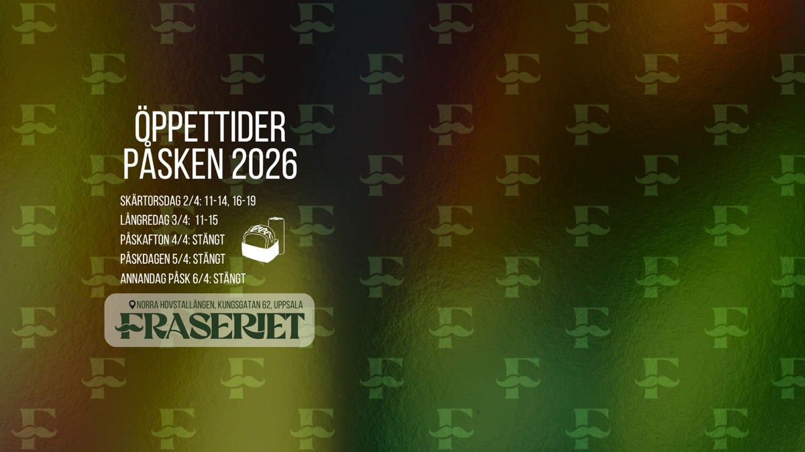
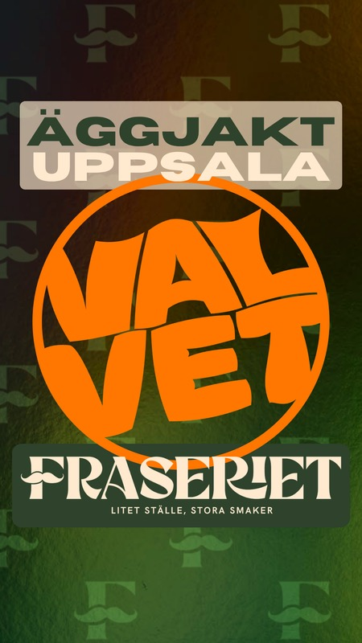
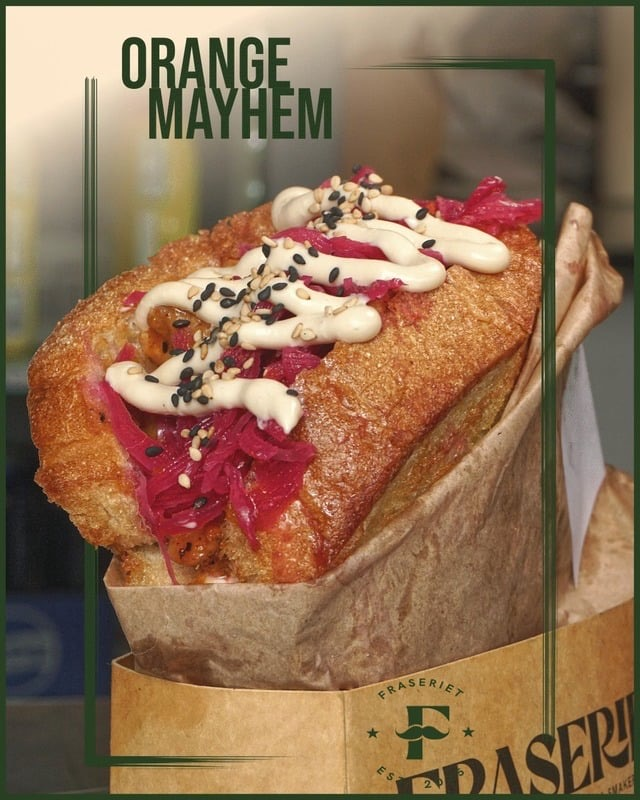
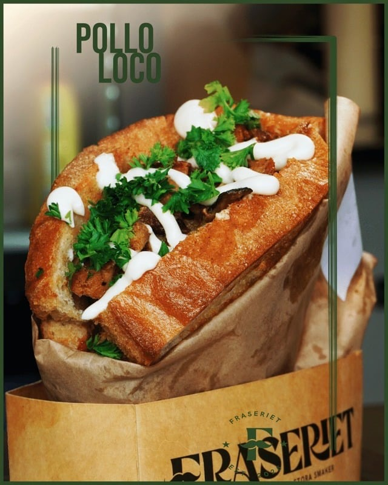
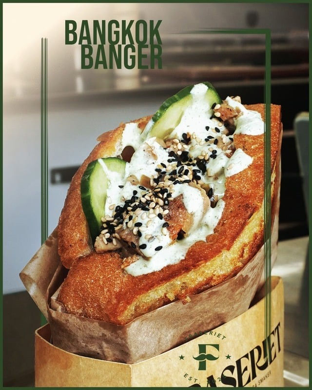
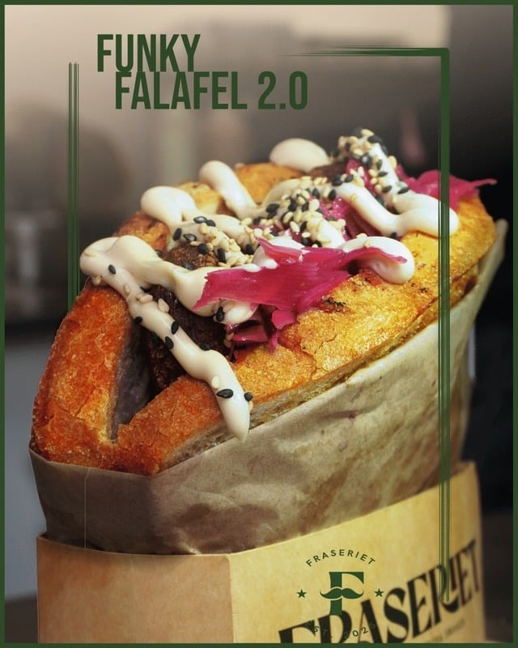

Fraseriet
Brief
När StudionValvet tog över Fraseriets sociala medier hade kontot ca 760 följare och ett svårutläst flöde. Företaget eftersökte tydlig visuell riktning.
Vårt arbete
Målet var att modernisera uttrycket, skapa en röd tråd och öka engagemanget genom mer rörligt och strategiskt innehåll.
För att visualisera det Fraseriet har att erbjuda gästerna såg vi vikten i att presentera produkterna på ett smakfullt och levande vis. Genom att fokusera på färg, textur och grafik ville vi representera Fraseriets konsekventa leverans i smaker och känsla.
Arbetet med Fraseriet är ett pågående uppdrag och vi arbetar aktivt tillsammans med kunden för att öka synligheten.
Kund: Fraseriet
Uppdrag: Social media, reklamfilm, branding






